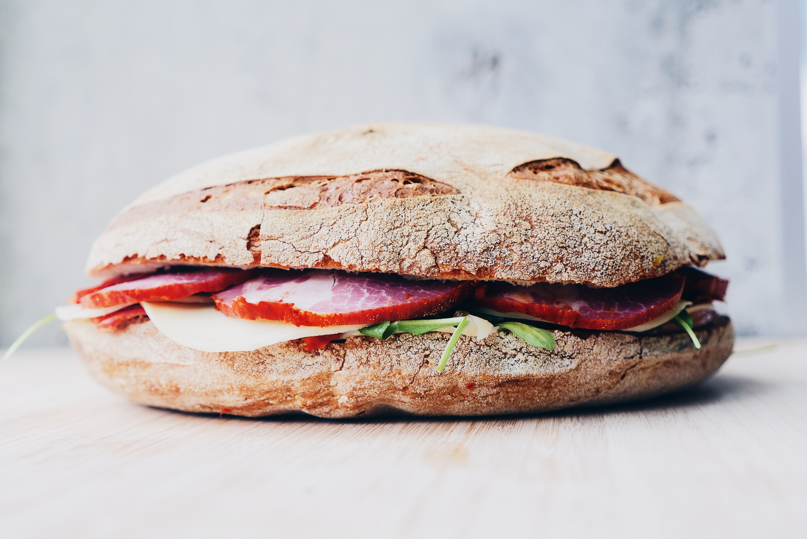

Days until coffee day:

Sandwiches
-

Egg and Tomato
The classic egg and Tomato Sandwich. Locally sourced ingredients at a great local price! A true Inner-city favourite! With additional toppings to suit your taste, served on a white or whole wheat: ciabatta, sourdough or rye bun!br/>
-

Club
Our Toasty home-made Club-Sandwich is sure fire way to start the day! Slow smoked ham, fresh field greens, and creamy Havarti cheese with additional toppings to suit your taste! Served on a white or whole wheat: ciabatta, sourdough, or rye bun!
-

Portobello Tomato
Slow sautéed Portobello mushrooms, garlic, and onion in a savoury teriyaki seasoning. Served on top of full-cut field tomato slices. This home-made favourite is a best seller. With additional toppings to suit your taste, served on a white or whole wheat: ciabatta, sourdough, or rye bun!
-

Grilled Cheese
Every kid’s favourite! Our grilled cheese is 50% off for children under 12 years of age! A fresh selection of Cheddar, Monterey jack, and Havarti cheeses. Mix and match whatever you like! With additional toppings to suit your taste, served on white or whole wheat: ciabatta, sourdough, or rye bun!
-
Vanilla Late
Our decadent vanilla is sourced straight from Madagascar, combined with locally sourced Canadian milk and steamed to perfection; this is the true vanilla latte. With a selection of sweeteners available: Organic cane sugar, agave, honey, and standard brand sweeteners
-

Mocha Latte
Dark Belgian chocolate whipped and steamed with locally sourced Canadian milk; our Mocha Latte packs a chocolatey punch to take down those cravings! The perfect pick-me-up during a long night or rough morning!
-

Matcha Latte
Fresh house-ground Matcha steamed with locally sourced Canadian Milk; This international favourite has been re-invented by our specialty baristas by utilizing home-grown Matcha. This latte is fresh and unexpected!
-

Regular Coffee
Regular and Dark roast coffee’s in Arabica, Robusta, Liberica and Excelsa beans. Sourced from all around the world from the best producers. Come in and talk to us about our beans!